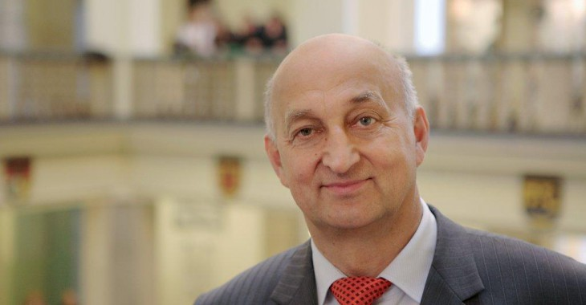

Antoni Tajduś:

Urodzony w 1949 r. w Tymbarku. Studia ukończył na Wydziale Górniczym w Akademii Górniczo-Hutniczej. Od początku zatrudnienia związany z AGH, gdzie uzyskał stopnie: doktora (1977), doktora habilitowanego (1990) oraz tytuł profesora (1998). Pełnił funkcje: Prodziekana Wydziału Górniczego (1993–1996), Dziekana Wydziału Górniczego (1996–2002) oraz Prorektora ds. Ogólnych (2002–2005). Przez dwie kadencje (w latach 2005–2008 oraz 2008–2012) sprawował urząd Rektora Akademii Górniczo-Hutniczej. Jednocześnie w latach 2008–2012 był przewodniczącym Konferencji Polskich Uczelni Technicznych. W latach 2013–2016 pełnił funkcję przewodniczącego Centralnej Komisji do Spraw Stopni i Tytułów. Obecnie jest kierownikiem Katedry Geomechaniki, Budownictwa i Geotechniki na Wydziale Górnictwa i Geoinżynierii.
Otrzymał wiele zaszczytnych odznaczeń i wyróżnień, a do najważniejszych z nich należą: Złoty Krzyż Zasługi (1996), Dyrektor Generalny I Stopnia (1998), Złota Odznaka „Zasłużony dla Górnictwa” (1999), Doktor Honoris Causa Donbaskiego Instytutu Górniczo-Metalurgicznego na Ukrainie (2002), Doktor Honoris Causa Narodowego Uniwersytetu Górniczego w Dniepropietrowsku (2006), Odznaka „Honoris gratia” nadana przez Prezydenta Miasta Krakowa (2009), Honorowa Odznaka „Zasłużony dla Głównego Instytutu Górnictwa” (2009), Profesor Honorowy Politechniki Śląskiej (2010), Małopolanin Roku 2009, Małopolska Nagroda Gospodarcza (2010), Naukowy Oskar za działalność naukową i organizacyjno-menedżerską (2010), Zasłużony dla KGHM Polska Miedź SA (2011), Krzyż Oficerski Orderu Odrodzenia Polski (2011), Profesor Honorowy Narodowego Uniwersytetu Technicznego Nafty i Gazu w Iwanofrankowsku (2012), Srebrny Medal za Zasługi dla Województwa Małopolskiego (2012), Doktor Honoris Causa Uniwersytetu w Miszkolcu (2013), Doktor Honoris Causa Politechniki Świętokrzyskiej (2013), Doktor Honoris Causa Politechniki Śląskiej (2015), Doktor Honoris Causa Politechniki Lubelskiej (2016), Doktor Honoris Causa Uniwersytetu Pedagogicznego w Krakowie (2017).